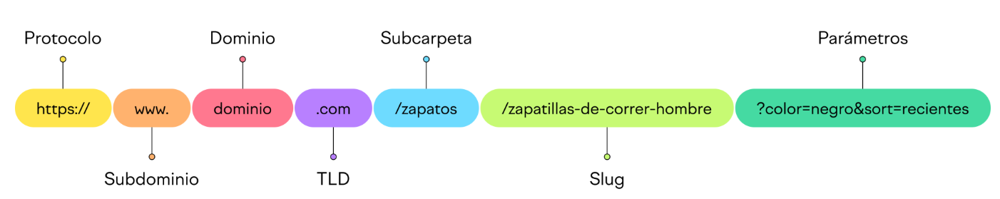

Tema 2: Navegadores Vs Buscadores
En el mundo digital, dos herramientas fundamentales son los navegadores y los buscadores. Los navegadores son programas que te permiten acceder a internet y explorar diferentes páginas web. Ejemplos comunes son Google Chrome, Mozilla Firefox y Safari. Por otro lado, los buscadores son plataformas que te ayudan a encontrar información específica en internet. Google, Bing y Yahoo son algunos ejemplos populares de buscadores. Mientras que los navegadores te permiten moverte por la web, los buscadores te ayudan a encontrar lo que buscas dentro de esta vasta red de información. Ambas herramientas son esenciales para aprovechar al máximo todo lo que internet tiene para ofrecer.
Actividad # 2:
- Abrir el Navegador (Google Chrome) y buscar: "navegadores vs buscadores"
- Explorar o navegar a través de los distintos resultados.
- Abrir el artículo de Infobae (¿Cuáles son las diferencias entre navegador y buscador?). Leer, analizar y escribir en tu carpeta:
- ¿Qué es un navegador? Menciona los más populares
- ¿Qué es un buscador? Menciona algunos
- Completar el cuadro comparativo:
- Abrir otra pestaña en el navegador para buscar ¿qué es una URL?
- Abrir el artículo de es.semrush.com (¿Qué Es una URL? Significado, Estructura y Consejos de Optimización). Leer, analizar y escribir en tu carpeta:
- ¿Qué es una URL? (Traduce el significado de URL en otra pestaña con el traductor de Google)
- Explica la definición y ejemplos de cada elemento en la Estructura de una URL:

Actividad # 3:
Revisar el material de GCFGlobal sobre ¿Cómo usar Internet?